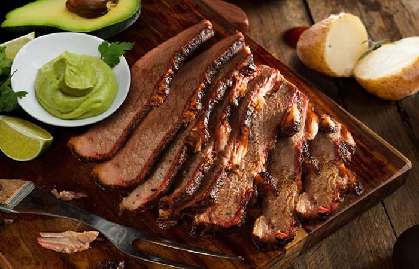
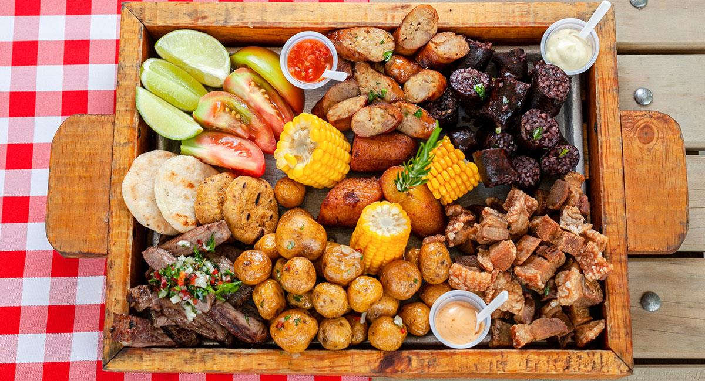
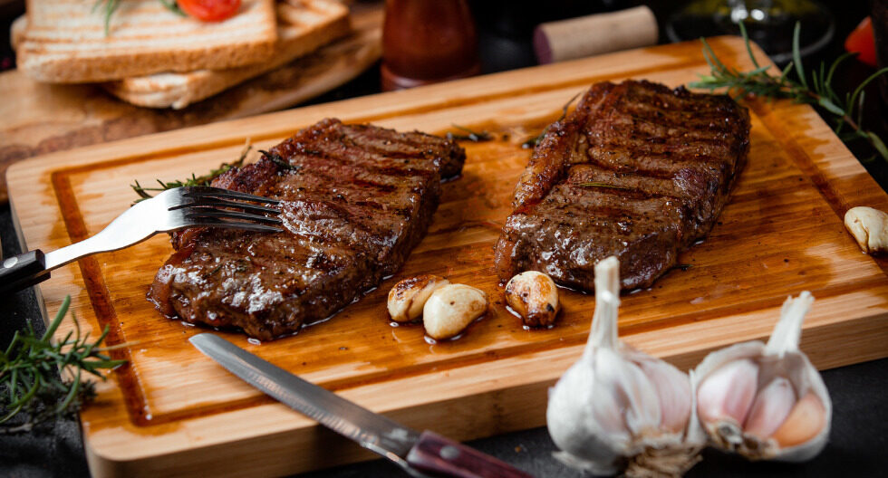
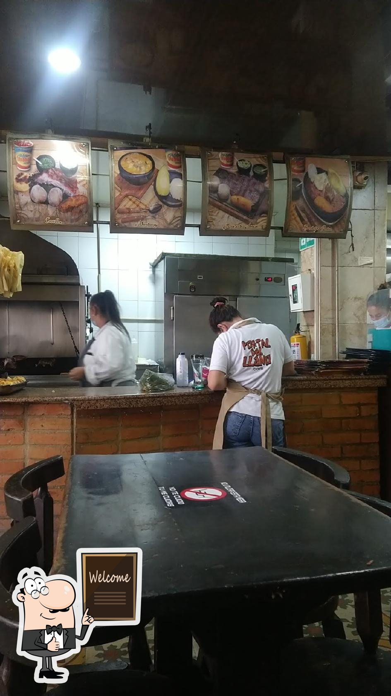
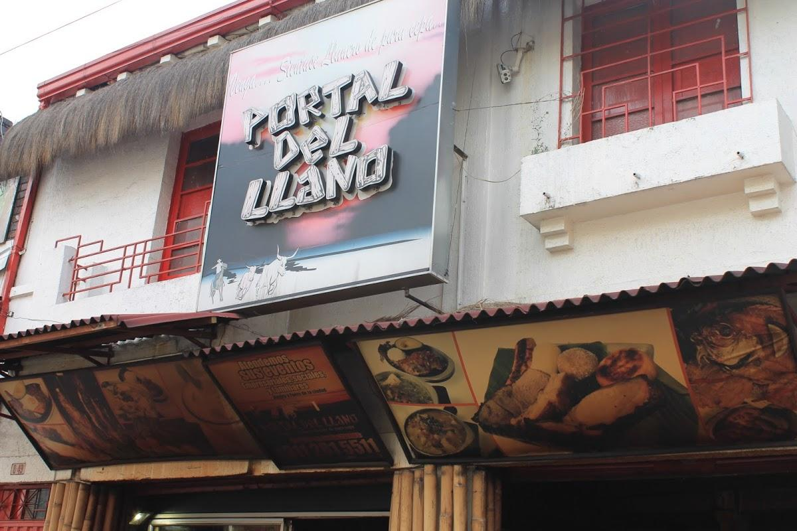
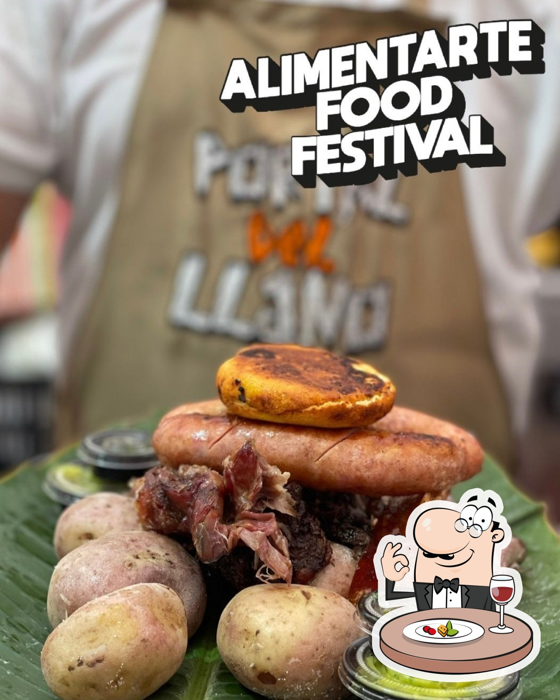
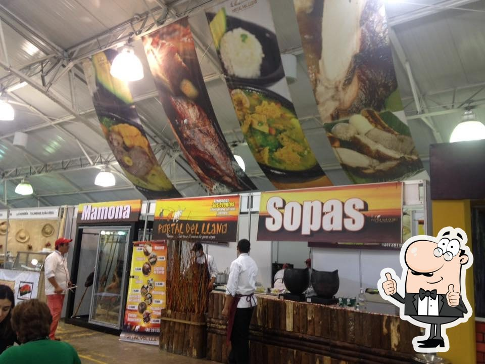

Mamona Tradicional
El auténtico sabor llanero preparado con técnicas tradicionales y carne de excelente calidad.
Mamona tradicional, carnes a la parrilla, picadas generosas y recetas típicas que conservan la esencia de los Llanos colombianos.
Este sitio es una demostración visual y no representa la página oficial del establecimiento.
Tradición llanera, carnes a la parrilla y sabores que conquistan a nuestros visitantes.

El auténtico sabor llanero preparado con técnicas tradicionales y carne de excelente calidad.

Generosas porciones para compartir en familia y disfrutar de una verdadera experiencia llanera.

Cortes jugosos y llenos de sabor preparados al punto perfecto sobre el fuego.
Reseñas de Clientes
Especialidad Llanera
Precio Promedio
Abiertos para Ti
Opiniones de quienes han disfrutado nuestra tradición llanera.
"Si vienes a este lugar debes pedirte una hamburguesa. De lo mejor que he probado."
"Buena comida a la parrilla, carnes tiernas, jugosas y con excelente sabor."
"La comida es deliciosa, la carne es jugosa y las porciones son generosas."
"Una de las carnes más deliciosas que he probado. Muy fresco y con excelente atención."
"Si vienes a este lugar debes pedirte una hamburguesa. De lo mejor que he probado."
"Buena comida a la parrilla, carnes tiernas, jugosas y con excelente sabor."
"La comida es deliciosa, la carne es jugosa y las porciones son generosas."
"Una de las carnes más deliciosas que he probado. Muy fresco y con excelente atención."
Tradición llanera, buena comida y momentos para compartir en familia.




Estamos listos para recibirte con nuestras especialidades, atención cercana y un ambiente ideal para compartir.
Especialistas en mamona tradicional, carnes a la parrilla, picadas llaneras y platos típicos colombianos. Un lugar ideal para disfrutar de la auténtica tradición llanera en Bogotá junto a familiares y amigos.
311 281 5511
Lunes a Domingo · Hasta las 6:00 PM
Más de 200 reseñas de clientes
Mamona, carnes a la parrilla y picadas llaneras